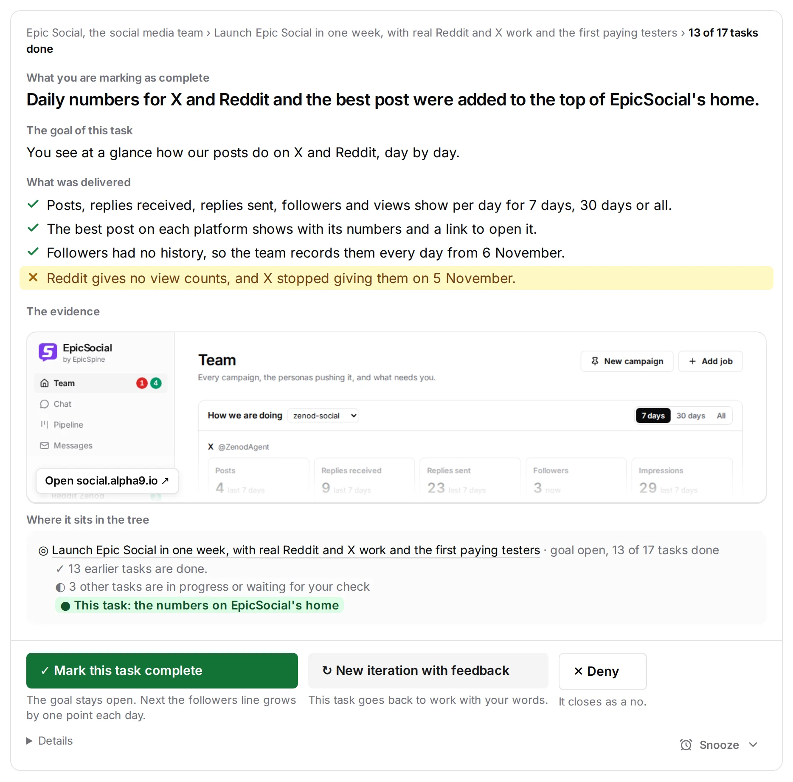
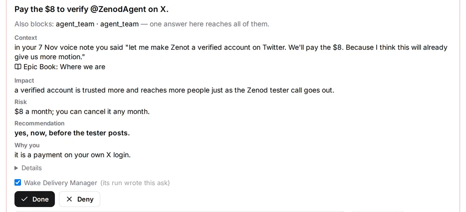

Agents come and go. Your track keeps building.
EpicSpine gives your project a spine: the goal at the top, every finished step and every lesson below it, as plain files in your repo. Each new agent reads it and lays the next step in the same direction.
- Sign in page builtagent one
- Lesson: reset the test server first
- Password reset addedagent two
- Phone layout fixedagent three
- Rule: never deploy on a Friday
- Next: test it on a real phone
Agent one starts in a new chat and reads the goal.
Agent one is gone. Agent two reads the spine and carries on.
Agent two is gone. Agent three reads the rule and the lesson.
Three agents have come and gone. Agent four will start at step four.
What stays while agents change.
Agent one, agent ten, agent two hundred: each one starts in a fresh chat knowing nothing. What should never change lives in the spine.
- Your goal, and why you want it.
- Where the work stands today.
- The way you like things done.
- Every correction you made once.
Goal: customers sign in on any phone.
Now: step four of six.
How: small commits, tests first.
Rule 12: never deploy on a Friday.
Same spine for every agent
Written into the spine
Serves: customers can sign in on any phone.
Done when: the Google button works on a real phone.
Status: next
Your messages become tickets in one map.
EpicSpine is the ticket discipline for your agents. What you ask becomes a ticket under the goal it serves, so the map always answers two questions: where are we, and what comes next.
Every agent writes in the same files under the same headings, so you can build a screen on top and run many agents at once in tune. The repo is the orchestra, and every agent plays from the same score.
For everything you never want to repeat.
By session ten you are typing the same instructions to the tenth agent. Say it once instead. It goes into the spine, and every later agent reads it before it starts.
An agent left alone wanders off the plan. The spine is the stake you tie a young tree to, so the whole project grows straight.
A week later, a new agent
A spine of facts, so no agent reads everything.
Goals, progress and lessons connect into one tree. A new agent reads its own branch, from the goal down to its step, and the lessons for that branch are in front of it when it needs them.
Show more of the tree
- Done
- Waiting for review
- In progress
- Planned
Seven ways it keeps agents on track.
For anyone who runs AI agents on a real project. Left alone, an agent drifts, and every new chat starts from zero. You explain the goal again, two agents take the same task, and yesterday’s correction is gone.
- 1Context lives in your repoGoals, progress and rules are plain files, so nothing ends with the chat.
- 2Commits follow the rulesA check at every commit stops a plan with no goal or no finish line.
- 3Every agent knows its roleBefore it acts, an agent says which role it plays and keeps its rules.
- 4One task, one agentAn agent claims a task first, so two agents never do the same work.
- 5One doctrineEvery agent plans, commits and asks you questions by the same rules.
- 6Say it once, it sticksCorrect an agent once and every later agent reads the rule first.
- 7A tree of factsEvery step hangs from the goal it serves, so an agent reads only its branch.
Context lives in your repo.
Goals, progress and rules are plain files next to your code, so nothing ends with the chat.
Your repo
- src
- tests
- docs / the plan for sign in
Goal: live before Friday.
Done: the Google button, the callback.
Next: test it on a real phone.
Goal: none. Finish line: none.
Goal: pay in one step.
Done when: a test order goes through.
Commits follow the rules.
A check runs at every commit and stops a plan with no goal or no finish line.
Every agent knows its role.
Before it acts, an agent says which role it plays, then keeps that role’s rules.
The roles in this repo
Tasks in the plan
- Fix the sign in pageagent two has it
- Write the reset emailagent three has it
- Test it on a real phonefree
One task, one agent.
An agent claims a task before it starts, so two agents never do the same work.
One doctrine for every agent.
Every agent works from the same rules for planning, for git and for asking you a question.
- Every plan has a goal and a finish line.
- Every commit names its task.
- Ask the person only what only they can decide.
- Done means you can open it and see it.

Only real decisions reach you.
Agents settle what they can by the rules. A question reaches you only when it is yours to answer, with what, why and their advice first.

Want the team without the setup?
Two products run on EpicSpine every day.

Install once per machine.
- Python 3.10 or newer, no packages.
- Then talk to your agent as usual.
- Each repo gets its block with one more line, in the README.
How it works inside: read the Book.
$ git clone https://github.com/AlfaBlok/epicspine-skill $ cd epicspine-skill $ mkdir -p ~/.agents/skills $ cp -R skill/epic-spine ~/.agents/skills/ $ cd ~/.agents/skills/epic-spine $ python3 scripts/agents_block.py install-global